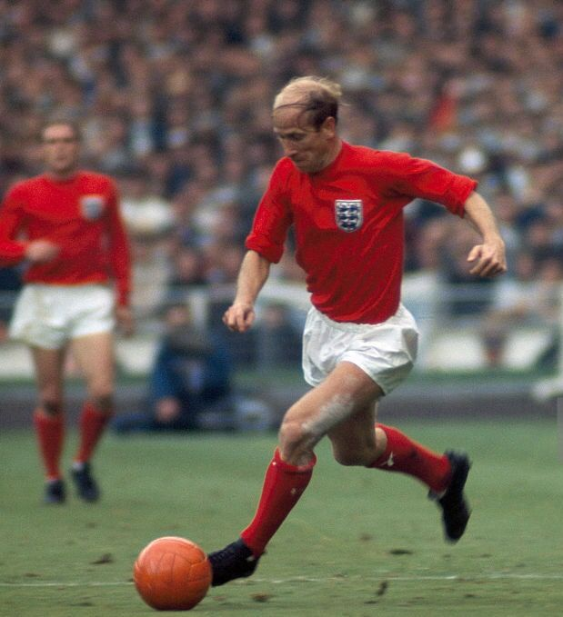
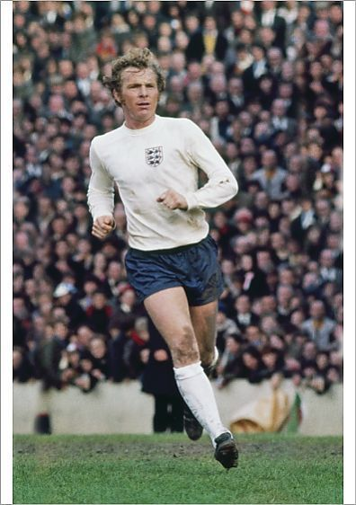
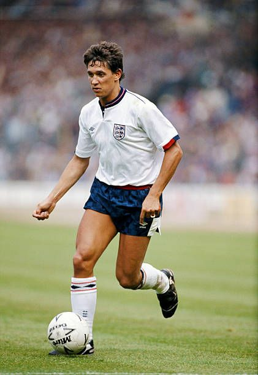
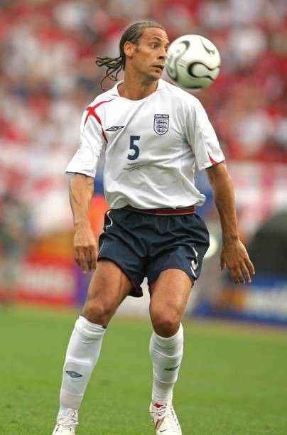
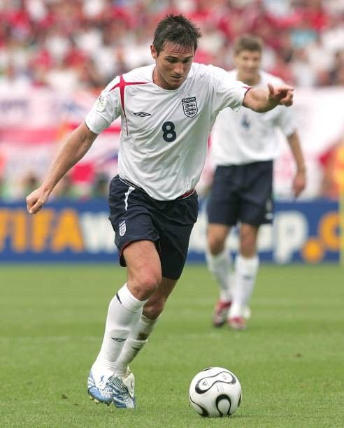
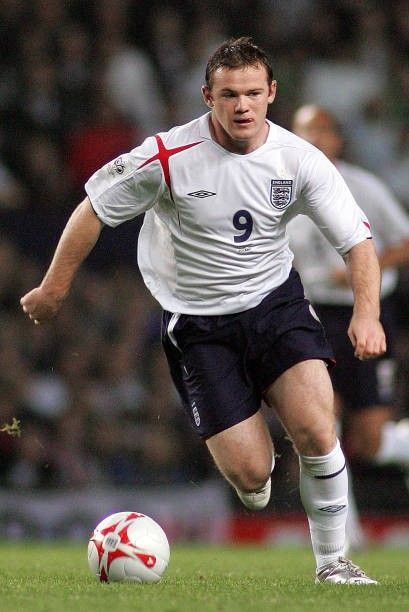
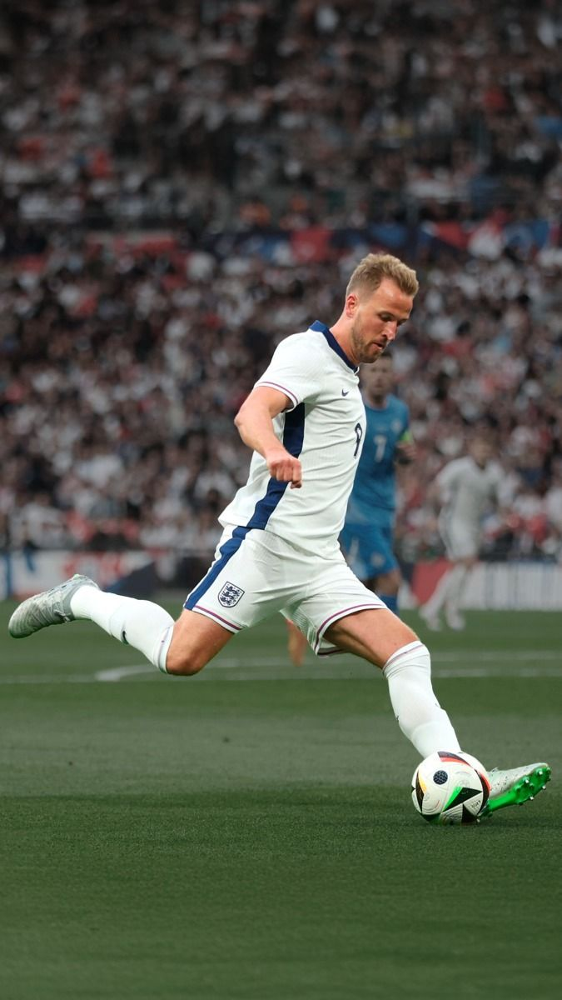

Bobby Charlton
1958 - 1970
Sir Bobby Charlton é um dos maiores jogadores da história do futebol inglês. Campeão mundial em 1966, foi fundamental na conquista do único título mundial da Inglaterra. Foi eleito o melhor jogador da Europa em 1966 e é considerado um dos melhores meio-campistas da história do futebol.

Bobby Moore
1962 - 1973
Bobby Moore foi o capitão da seleção inglesa campeã mundial em 1966. Considerado um dos melhores zagueiros da história do futebol, foi fundamental na defesa inglesa durante os anos 1960 e 1970. Sua elegância, técnica e liderança o tornaram um ícone do futebol inglês.

Gary Lineker
1984 - 1992
Gary Lineker é um dos maiores artilheiros da história da seleção inglesa (48 gols). Foi artilheiro da Copa do Mundo de 1986 com 6 gols. Famoso por sua capacidade de finalização e movimentação, foi fundamental no ataque inglês durante os anos 1980.

Rio Ferdinand
1997 - 2011
Rio Ferdinand foi um dos melhores zagueiros da história do futebol inglês. Participou de três Copas do Mundo (1998, 2002 e 2006) e foi fundamental na defesa inglesa durante os anos 2000. Com sua técnica, velocidade e capacidade de saída de bola, foi um dos pilares da equipe inglesa.

Frank Lampard
1999 - 2014
Frank Lampard foi um dos melhores meio-campistas da história do futebol inglês. Participou de três Copas do Mundo (2006, 2010 e 2014) e foi fundamental no meio-campo inglês durante os anos 2000. Famoso por seus chutes de longa distância e capacidade de chegar ao gol, foi um dos maiores artilheiros entre os meio-campistas.

Wayne Rooney
2003 - 2018
Wayne Rooney é o maior artilheiro da história da seleção inglesa (53 gols). Participou de três Copas do Mundo (2006, 2010 e 2014) e foi fundamental no ataque inglês durante mais de uma década. Com sua técnica, força física e capacidade de finalização, é considerado um dos melhores atacantes da história do futebol inglês.

Harry Kane
2015 - Presente
Harry Kane é um dos maiores atacantes da seleção inglesa atual. Artilheiro da Copa do Mundo de 2018, é o segundo maior artilheiro da história da seleção inglesa. Com sua capacidade de finalização, movimentação e liderança, é um dos pilares da equipe inglesa atual.